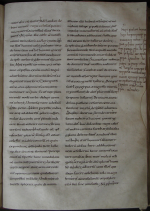
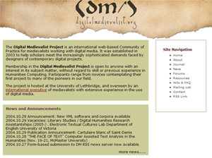

About my research
As a researcher, I write books, articles, and lectures on various topics, mostly having to do with medieval language and literature, the history of the book, textual scholarship, and humanities computing. You can find a complete list of my publications and lectures in my CV. I am also associated with two international research projects: The Digital Medievalist Project and The Visionary Cross/Digital Rood Project. The Digital Medievalist Project is an international Community of Practice dedicated to the development and dissemination of best practice in the use of digital media by medievalists. It operates an on-line scholarly journal, mailing list, Wiki, and resource centre. You can contact the project at digitalmedievalist@uleth.ca. The Visionary Cross/Digital Rood Project is a research project that will ultimately produce an electronic edition of the "Visionary Cross" trope in Anglo-Saxon England. I am a co-director of this project with Dr. Martin Foys of Hood College Maryland, and Professor Catherine Karkov of Miami University, Ohio.